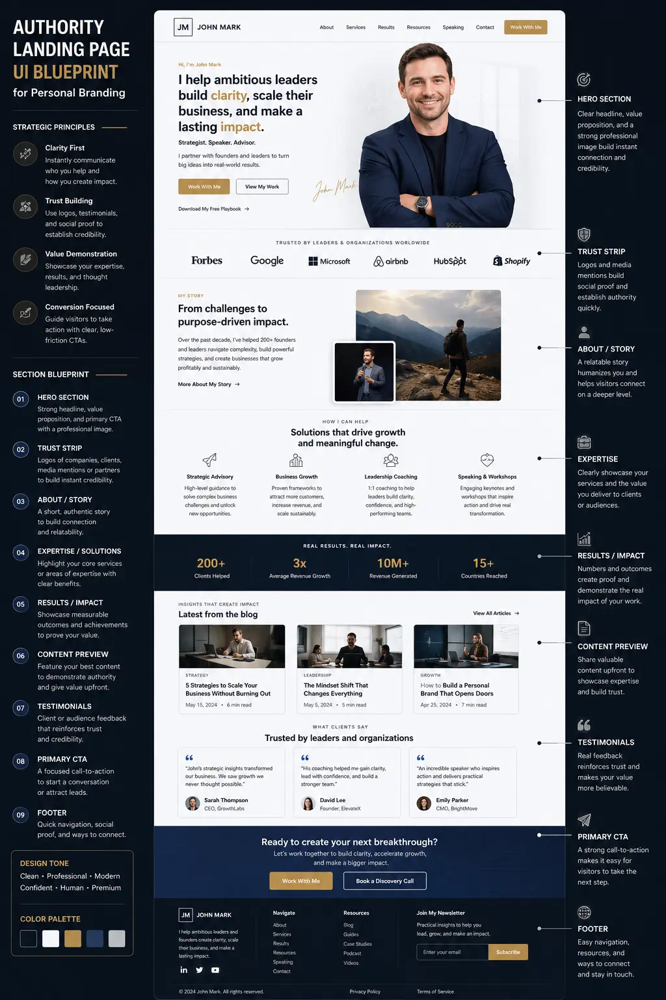
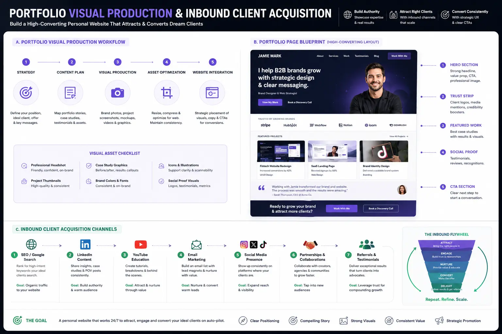

Architecting an Inbound Landing Page Layout that Converts Traffic on Auto-Pilot
The Cost of Digital Invisibility: Why Standard Portfolios Fail Specialized Experts
A common issue faced by modern consultants, agency founders, and senior advisors is digital passivity. They possess deep industry knowledge, a history of client successes, and unique expertise. Yet, when prospective clients search for them online, they are met with a website that acts as a digital resume. These pages are structured like static biographies, listing credentials and job roles in chronological order. They rely entirely on the visitor doing the hard work: scrolling, deciphering blocks of text, and figuring out whether the expert is a fit.
In 2026, this passive approach is a significant source of lost revenue. If you drive traffic from high-intent platforms to an unoptimized layout, you will lose potential leads. To truly Build Your Own Brand as a recognized expert, your website must function as an active sales machine. Rather than just hosting information, you must build high-converting personal websites that guide, qualify, and convert visitors on autopilot. This requires a transition from standard portfolios to a strategically sequenced interface designed around user psychology.
When you convert your digital presence into a conversion engine, you reduce your reliance on manual pre-screening. An optimized layout pre-qualifies prospects, answers objections, and builds trust before they book a call. For solo operators and agency founders, this is the key to converting traffic online without spending hours on low-value sales calls.
Anatomy of the Authority Landing Page UI Blueprint: The Conversational Sequence
A successful personal site is built around a structured sequence. This is what we call an Authority Landing Page UI Blueprint. Unlike typical websites that overwhelm users with countless options, this blueprint creates a single, focused path. The layout is designed to replicate the flow of a consultative sales call, handling objections in the exact order they arise in a prospect's mind.
The psychological sequence of the Authority Landing Page UI Blueprint begins in the hero section. This is the top fold of your website, and it must capture attention within five seconds. The copy must clearly state who you help, what business outcome you deliver, and the next step the user should take. Beside this value proposition, you place a high-contrast, professional authority photograph. Below this hero text, before the user even starts scrolling, there must be a strip of immediate social proof: logos of reputable media outlets, client companies, or professional associations.
As the visitor scrolls, the page transitions to validate their specific challenges. You must detail the exact pain points your prospects face. By showing that you understand their day-to-day problems in detail, you build immediate trust. Following the problem, you introduce your unique solution—your proprietary methodology or framework. This explains *how* your approach succeeds where generic alternatives fail. Next, you present the evidence: real-world results backed by structured case studies. Finally, you close with a low-friction call-to-action that invites them to schedule a call or submit an inquiry.
Organizing your page according to an Authority Landing Page UI Blueprint ensures that visitors are guided through a logical narrative. It replaces confusion with clarity, ensuring that every element—from the hero headline to the scheduling button—supports a single conversion goal. This structured sequence is the secret behind personal brands that consistently generate high-value inquiries on autopilot.
Key Benefits of Architecting a Conversion-Focused Layout
Transitioning your personal site from a static resume to an active conversion asset yields massive professional advantages. When you optimize your page layout for inbound inquiries, you create a digital asset that compounds in value over time.
Below are the four main benefits that consultants, solo founders, and agency owners experience when adopting this approach:
Automated Pre-Qualification
A structured Authority Landing Page UI Blueprint pre-qualifies incoming prospects by clearly stating your target audience and budget scope, ensuring that only high-fit clients book scheduling slots.
Subconscious Credibility
Using strategic visual asset placement of media logos, client badges, and video reviews builds instant trust, establishing your expertise before a visitor reads your detailed copy.
Continuous Lead Generation
With optimized calendars and forms, your site transitions into converting traffic online 24/7, capturing qualified leads during weekends, holidays, and off-hours automatically.
Asset Reusability and ROI
Investing in professional portfolio visual production and high-quality visuals creates marketing assets that can be repurposed across social media campaigns, pitch decks, and proposals.

Strategic Visual Asset Placement: Guiding Attention through Design
One of the most common mistakes in web design is treating visual assets as decorative additions rather than functional tools. On high-performing personal sites, images are used to guide the visitor's eyes and build trust. This is the science of strategic visual asset placement.
The human brain processes visual elements much faster than written copy. When a visitor lands on your page, their eyes will jump to faces, high-contrast graphics, and buttons before they read a single line of text. Knowing this, we must organize visual assets at high-impact zones. For example, your primary authority photograph should be in the hero section, but it must be oriented correctly. The gaze direction of the person in the photo should point toward the headline or the CTA button. If the face in the photo is looking away from the copy, the visitor's eyes will follow that gaze off the screen.
Additionally, media badges, client logos, and testimonials should not be buried on a separate page. They must be placed directly next to the written claims they validate. If you claim to have helped a client double their revenue, a video testimonial or case study summary should sit right next to that copy. This strategic visual asset placement reinforces your written claims with immediate visual proof, making your expertise undeniable.
Applying Personal branding landing page tips like these ensures that design serves your business goals. Visual assets should not clutter the screen or distract the user; they must act as visual guideposts that lead the visitor toward the booking system. Proper placement helps you maintain a clean visual hierarchy, making the page easy to scan and highly persuasive.
The Photography Rules: Communicating Authority through Visual Quality
If your website features casual selfies, low-resolution event photos, or generic corporate stock images, you are damaging your professional credibility. High-value clients associate premium visual presentation with premium service quality. To build a premium personal brand, you must establish and follow strict website photography rules.
First, never use generic stock photography of models pretending to be consultants. Visitors identify stock photos instantly, and it signals that you are hiding your true identity. You must invest in high-resolution, professionally shot portraits of yourself. Second, ensure visual consistency. The lighting, color grading, and style of your photographs should match your website's CSS stylesheet and overall brand identity. If your brand is minimalist and modern, your photos should feature clean backdrops and natural light.
Third, incorporate environmental portraits. These are photos that show you in your natural working element—presenting to a board, writing on a whiteboard, or advising a client in a modern workspace. Environmental portraits communicate active competence, showing that you are a practitioner, not just a theorist. By obeying these website photography rules, solo founders can elevate their perceived value and justify charging higher rates.
Finally, optimize all images for quick loading and responsive layouts. High-resolution files must be compressed and served in modern formats (like WebP) to prevent page lag. A slow site erodes trust and increases bounce rates, violating the core principles of converting traffic online. Proper technical optimization of your photography ensures that your visual assets build authority without hurting page speed.
Portfolio Visual Production: Transforming Case Studies into Visual Proof
Most personal websites fail to present client results effectively. They provide a wall of text that describes the history of a client engagement in exhaustive detail. Busy decision-makers will not take the time to read through paragraphs of text to find your achievements. To solve this, experts utilize portfolio visual production.
Through portfolio visual production, you transform dry, text-heavy case studies into visually engaging assets. Instead of just writing about your results, you package them into infographics, before-and-after metric cards, and clean visual summaries. For instance, a case study about digital transformation can feature a high-contrast chart showing the client's operational cost dropping over a twelve-month period. You can also package case studies into brief slide decks or structured summaries that explain the challenge, the method, the result, and the key metrics in under 15 seconds.
By investing in high-quality portfolio visual production, you make your success stories memorable. It shows that you value clarity and professionalism, qualities that premium clients look for in external advisors. These visual assets also serve a double purpose: they can be repurposed for LinkedIn posts, sales decks, or downloadable PDFs, maximizing the return on your production investment.
High-end portfolio visual production separates premium experts from generalists. It transforms abstract assertions of competence into tangible, undeniable evidence. When prospects can see your success visualized clearly, they are far more likely to trust your capabilities and initiate a business conversation.
The Technical Stack: Integrating High-Converting Personal Websites
A beautiful layout and professional photography are only as good as the underlying technology. To build an inbound system that converts traffic on auto-pilot, you must integrate your landing page with a modern technical stack. This is the foundation of high-converting personal websites.
The core of this stack is your booking infrastructure. Instead of forcing prospects to email you back and forth to find a meeting time, you must integrate a scheduling tool directly onto the page. The scheduling form should include custom pre-screening questions that ask about the prospect's budget, business size, and primary goals. This pre-qualifies the lead before they can book a slot on your calendar, protecting your time.
Additionally, your technical setup must include advanced tracking and analytics. By installing the Facebook Pixel, GA4 tags, and heatmap tracking tools, you can collect valuable data on how visitors interact with your page. This allows you to identify where users drop off and optimize your copy and layout accordingly. Let's look at the three core technical areas:
Lead-Capture Infrastructure
- Automated booking platforms (Calendly, SavvyCal) with pre-screening questions to filter quality leads.
- Custom, low-friction forms designed for mobile responsiveness and quick data entry.
- Immediate automated email replies to nurture leads and confirm consultation appointments.
- CRM synchronization to track client details and interaction histories automatically.
Analytics & Attribution
- Google Analytics 4 setup to measure page-views, bounce rates, and scroll depth accurately.
- Facebook Pixel and conversion APIs to retarget landing page visitors on social feeds.
- Visual heatmap tracking (Hotjar, Microsoft Clarity) to analyze user scroll patterns and clicks.
- Conversion goals and custom event triggers to pinpoint exact drop-off points.
Delivery & Optimization
- Lightning-fast CDN hosting to ensure images and video assets load in under a second.
- Optimized image and video compression to prevent layout shifts and speed degradation.
- Cohesive visual layout system with a distinct brand color palette and typography.
- Integrated tag clouds and search indexing to help users find relevant case studies instantly.

Activating Inbound Client Acquisition Channels to Feed Your Engine
An optimized landing page is a conversion engine, but an engine needs fuel. To generate leads on autopilot, you must connect your page to active Inbound Client Acquisition Channels.
The most effective inbound channel for personal brands is thought leadership content on professional networks like LinkedIn. By publishing detailed, insight-rich content on a regular basis, you attract the attention of industry decision-makers. In each post, you direct interested readers to your website to learn more or book a consultation. Other key channels include organic search engine optimization (SEO), where you target industry-specific keywords, and email newsletters, where you nurture relationships with existing subscribers.
When you feed your landing page with high-quality traffic from these Inbound Client Acquisition Channels, you establish a systematic flow. Cold or warm visitors land on your optimized UI blueprint, see your professional visual assets, review your case studies, and book a call. This is the entire process of converting traffic online on autopilot. You build trust, overcome objections, and pre-qualify leads before you ever jump on a discovery call.
Relying on manual outreach or cold email campaigns is exhausting and difficult to scale. By developing predictable Inbound Client Acquisition Channels, you attract prospects who are already familiar with your work and pre-disposed to trust your advice. This changes the dynamics of your sales conversations, positioning you as an expert partner rather than a vendor pitching for work.
Advanced Personal Branding Landing Page Tips for Continuous Growth
Architecting a high-converting website is not a one-time project; it requires ongoing testing and refinement based on real visitor data. To keep your page performing at its peak, you must implement continuous optimization habits. Here are a few advanced Personal branding landing page tips to help you scale:
First, simplify your call-to-action paths. Many experts make the mistake of asking users to do multiple things: subscribe to their newsletter, read their latest blog post, follow them on social media, and book a consultation call. This choice overload leads to decision paralysis. Focus the page on a single, primary CTA. If your goal is to book consultation calls, make that the main action button and remove competing links.
Second, test your headline and hero copy. A minor change in how you articulate your core benefit can result in a significant increase in conversions. Use simple, clear language rather than complex jargon. Third, use sticky navigation elements on mobile devices. A mobile-responsive layout should feature a persistent "Book Call" button at the bottom of the screen, ensuring that visitors can take action the moment they feel convinced. By applying these Personal branding landing page tips, you ensure that your site continues to capture leads efficiently as your traffic grows.
Conclusion: Take Control of Your Digital Reputation
Architecting an inbound landing page is not a social media vanity project; it is a critical business development investment. When you design a page around the Authority Landing Page UI Blueprint, apply strict website photography rules, and present results through professional portfolio visual production, you create an asset that works 24/7 to build your business. It allows you to leverage your Inbound Client Acquisition Channels and convert traffic on autopilot.
Ultimately, the process to successfully Build Your Own Brand and maintain a high-converting digital footprint requires professional execution. Balancing client work with website management is difficult. This is why partnering with a dedicated creative partner can be a game-changer.
At The PhD Ads in Madurai, we specialize in helping independent consultants, senior advisors, and solo founders build high-converting personal websites that generate leads on auto-pilot. We handle everything from the initial UI layout to the complete technical setup, copywriting, and visual production. Let us help you Build Your Own Brand with an optimized landing page layout that converts traffic on auto-pilot.
Key Topics
Ready to Build a High-Converting Personal Website that Generates Leads on Auto-Pilot?
At The PhD Ads in Madurai, we design, build, and optimize complete high-converting personal websites for consultants, solo founders, and agency owners. From developing your Authority Landing Page UI Blueprint and managing portfolio visual production to mapping your Inbound Client Acquisition Channels, we handle the entire process. Let us help you Build Your Own Brand with high-quality copy, premium visual assets, and optimized booking systems.
Email: team@e2o.in